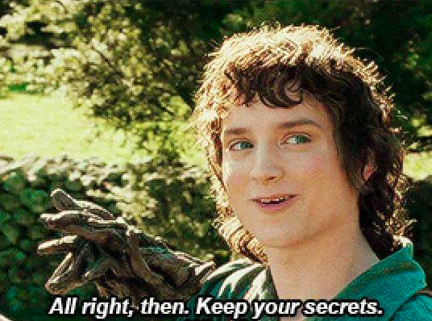

Will Zywiec, PhD
I built this website to learn a little HTML and CSS.
This website is a collection of graduate school projects and unrelated things I work on in my free time.
The link to the latest criticality CRAN build is here.


Updates
September 11, 2024
I'm excited about the next batch of polymer. I have a new recipe, a new mixer, a new mold release wax, and high hopes that the 3D-printed molds won't bleed acid.
In between batches, I'm working on developing new and semi-robust methods for third-order neutron correlation analysis.
May 19, 2024
Working on fixing less than 20 lines of code that take 24+ hours to run.
May 12, 2024
Just spent a few more days testing polymer mixtures. Every time I mix up a batch, I learn something. Usually that something is what not to do.
April 15, 2024
"What matters most is how well you walk through the fire." - Charles Bukowski
January 9, 2024
Douglas Sturgess + Leslie's Pool Supply > Sigma-Aldrich
August 11, 2023
At Preservation Pub reading an amazing dissertation beneath a tree made of lights. #toowildfriday ☢️🤖
June 15, 2023
Whenever I run a physics code that crashes with nondescript error messages:

April 15, 2023
I recently started modeling polymer mixtures to study and optimize their mechanical properties.
Most of the test samples I make look like tiny pink cupcakes.
October 24, 2021
Fixed minor geometry and density logic errors.
The success rate is now 100%.
There are still a few cross section calls and tallies I need to adjust to make the MCNP simulations more accurate, but everything works.
I reconfigured the script to check and plot errors to verify the successful completion of all 10,000 simulations.
October 24, 2021
Fixed a material error, which eliminated all but 24 failures.
The minimum success rate is now 99.78%.
October 24, 2021
Fixed a density error, which eliminated the rest of the fatal errors.
The minimum success rate is now 96.87%.
October 24, 2021
Fixed a source particle distribution error, which reduced the number of fatal errors and eliminated all wrong length failures.
The minimum success rate is now 95.2%.
October 24, 2021
The 10 particles got lost failures are completely gone. The minimum success rate is now 86.88%.
October 24, 2021
Indexed all of the 10 particles got lost failures, plotted a few of them, and saw pretty clear geometry errors, so I refactored a couple lines of code and was able to fix the affected input decks.
Now rerunning 776 MCNP simulations.
October 24, 2021
Preliminary results:
Looked at the output and bad trouble and impossible turned out to be redundant failures, so I ignored impossible. This caused the minimum success rate to rise to 79.33%, which isn't much of an improvement.
October 23, 2021
Took a brief pause after 2,259 MCNP simulations and plotted the results:
Overall, this represents a minimum success rate of 76.18%, which isn't terrible. I haven't checked for failure redundancy, but I don't really care at this point because the goal is to get to 100%.
October 23, 2021
I'm building a few different MCNP simulation databases, and the input code I inherited to run these simulations is messy and fails a lot, so I thought I'd post these failures as I iteratively fix them.
The keywords I'll be searching for are bad trouble, fatal error, impossible, wrong length, and 10 particles got lost, with maybe a few more to be added later on.
The rules are simple: If there are one or more unique keywords in an output file, all will be counted; however, redundant keywords in the same output file will be ignored. As of right now, 492 out of 10,000 simulations are finished. 🎃
April 17, 2021
The following k-effective contour plot was made using a deep neural network metamodel of MCNP6.2 simulations.
This plot represents 0-4 kg of alpha-phase plutonium, homogeneously dispersed in a sphere of water, with one inch of water reflection.
These results are very accurate (MAE = 2.5e-04) and outperform state-of-the-art spline fitting techniques by more than one order of magnitude. This graph is impossible to appreciate because it's more accurate than the width of the pixel of whatever monitor it's displayed on.
April 16, 2021
Here are some graphs from assignments I completed when I was a graduate student at JHU.
They were made with R and ggplot2 and formatted to appear as they do in the book Getting Started with Minitab, which I've never used.
The following graphs were from an airport TSA body scanner project, where I used R and Arena to simulate passenger queues, alarm rates, time delays, and wait times to determine how many scanners were needed to ensure less than 1% of passengers waited 30+ minutes. The first two sets of graphs were based on only a few simulations, which is why they appear spotty. These simulations were tested using real data from the Oakland International Airport.
Even after switching luggage scanners in Terminal 2, the queue times of OAK are still the lowest in the nation for an airport of its size, geographic location, population density, and throughput.
May 5, 2013
Have you ever operated a nuclear reactor?
Yes? Well, have you ever achieved 500% reactor power by ejecting a rod from a four-loop Westinghouse PWR that was modified to burn MOX fuel?
Jan 10, 2011
"All the speed he took, all the turns he'd taken and the corners he'd cut in Night City, and still he'd see the matrix in his sleep, bright lattices of logic unfolding across that colorless void." - William Gibson